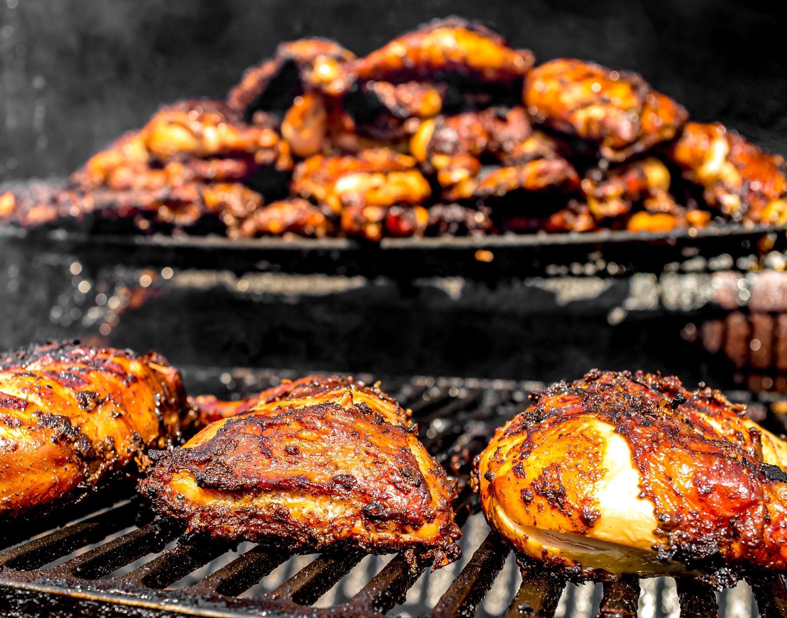

üèù Exploring Dunn‚Äôs River Falls ‚Äì A Must-Visit in Jamaica
Published on March 12, 2025

Jamaica is home to some of the most breathtaking waterfalls, and Dunn’s River Falls stands out as one of the top attractions. Located in Ocho Rios, this cascading waterfall is a favorite among adventure seekers and nature lovers alike. Stretching 180 feet high and 600 feet long, Dunn’s River Falls is one of the few waterfalls in the world that empties directly into the Caribbean Sea, creating a stunning natural spectacle.
Visitors can climb the falls with guided tours, using the naturally-formed limestone steps as footholds while holding hands in a human chain for support. The cool, refreshing water flows over smooth rocks, creating natural pools and lagoons where you can take a dip and enjoy the tropical surroundings.
For those looking to relax, the nearby Dunn’s River Beach offers a perfect place to unwind after the climb, with golden sand and crystal-clear waters. The surrounding lush rainforest provides shade and a picturesque backdrop, making it a great spot for photography.
Beyond the climb, visitors can explore craft markets and local vendors selling souvenirs, enjoy an authentic Jamaican lunch, or simply take in the mesmerizing views. Whether you're an adrenaline junkie seeking an adventure, a family looking for fun, or a couple searching for a romantic escape, Dunn’s River Falls offers an unforgettable experience that truly captures the beauty and spirit of Jamaica.
üçΩ A Taste of Jamaica ‚Äì The Best Local Dishes to Try
Published on February 28, 2025

No trip to Jamaica is complete without indulging in its vibrant and flavorful cuisine. From the world-famous jerk chicken to mouthwatering seafood dishes, Jamaica’s food scene is a paradise for food lovers, blending African, Indian, Spanish, and British influences into every dish. The island’s rich culinary heritage is deeply tied to its history, culture, and love for bold, aromatic spices.
Some must-try dishes include:
- Ackee and Saltfish – Jamaica’s national dish, featuring creamy ackee fruit sautéed with salted cod, onions, tomatoes, and spices, typically served with fried dumplings, bammy, or boiled green bananas.
- Jamaican Patties – Flaky, golden pastries filled with seasoned beef, chicken, shrimp, or vegetables, often paired with coco bread for a heartier meal.
- Curried Goat – A flavorful, slow-cooked dish made with tender goat meat, seasoned with Jamaican curry, garlic, and Scotch bonnet peppers, often served with rice and peas.
- Escovitch Fish – Fried whole fish topped with a tangy, spicy vinegar-based sauce made with carrots, onions, and Scotch bonnet peppers, a favorite coastal dish.
- Bammy – A cassava flatbread that is soaked in coconut milk and then fried or grilled, making it the perfect side for seafood dishes.
- Festival – Slightly sweet, deep-fried dumplings that complement jerk dishes or fried fish beautifully.
Jamaican cuisine isn’t just about the food—it’s about the experience. Whether you're dining at a beachside shack with the sound of waves in the background, enjoying a meal at a lively street food market, or savoring fine dining at a top-rated restaurant, every bite tells a story of Jamaica’s rich culture and love for bold flavors.
Pair your meal with a refreshing Red Stripe beer, a tropical rum punch, or a freshly made coconut water straight from the shell. And don’t forget to try a sweet treat like gizzada (coconut tart) or rum cake for the perfect end to your Jamaican culinary adventure!
üèñ Why Negril‚Äôs Seven Mile Beach is a Caribbean Treasure
Published on January 15, 2025
Crystal-clear waters, powdery white sand, and unforgettable sunsets – that’s what Negril’s Seven Mile Beach is all about. Consistently ranked among the best beaches in the Caribbean, this breathtaking stretch of coastline is located on Jamaica’s westernmost edge, making it the perfect spot to watch the sun dip below the horizon in a fiery display of oranges, pinks, and purples.
This iconic beach is not just a place to relax, but also a hotspot for water sports, reggae vibes, and beachside dining. Thrill-seekers can enjoy parasailing, jet skiing, and scuba diving at nearby coral reefs teeming with marine life. For a more laid-back experience, visitors can go kayaking, paddleboarding, or simply float in the warm, shallow waters.
Seven Mile Beach is also home to some of Jamaica’s most famous beach bars and restaurants, where you can sip a cold Red Stripe beer, indulge in freshly caught grilled lobster, or enjoy a plate of authentic jerk chicken while listening to the smooth sounds of live reggae music. At Rick’s Café, an iconic cliffside bar just a short distance away, adventurous souls can take the plunge with a thrilling cliff jump, while others sit back and enjoy expertly crafted cocktails and a spectacular sunset view.
Whether you’re snorkeling in the turquoise waters, taking a romantic sunset catamaran cruise, or simply stretching out under the shade of a palm tree, Negril’s Seven Mile Beach offers a picture-perfect Caribbean escape that captures the essence of paradise.